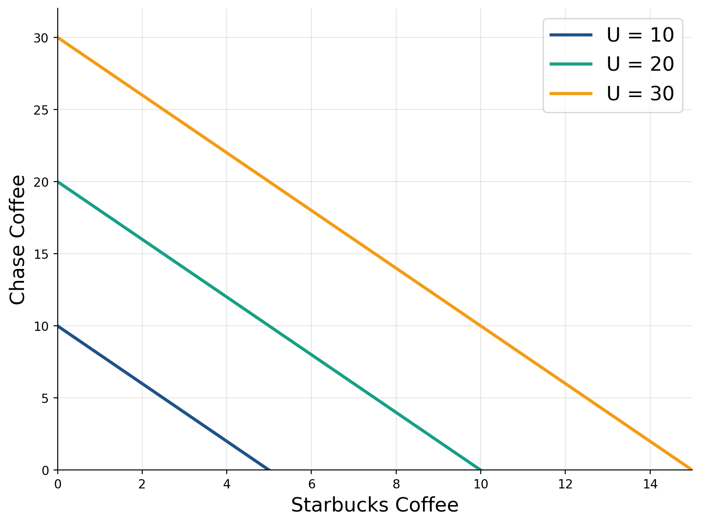
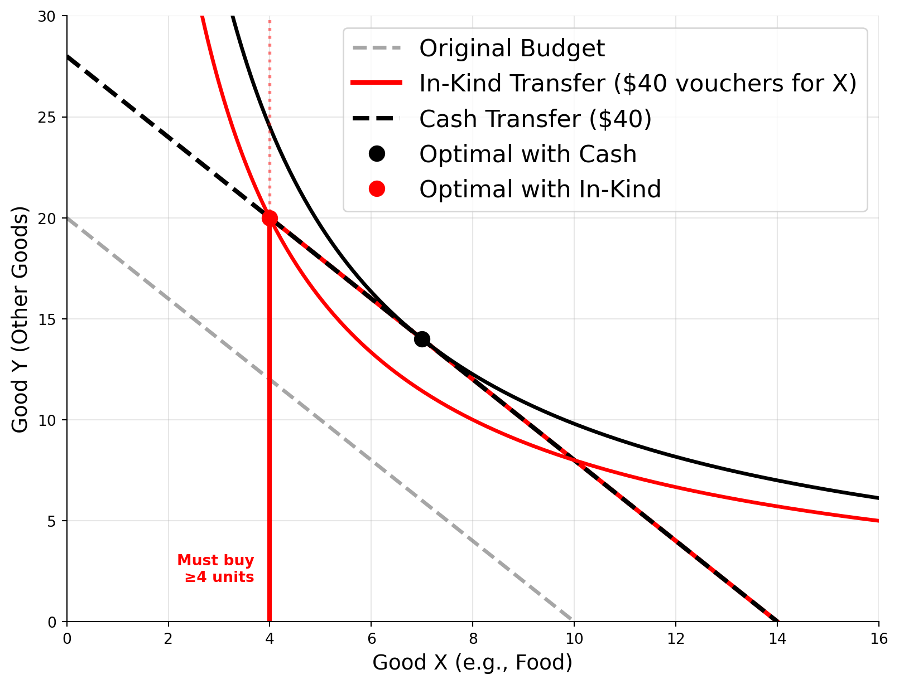

Consumer Preferences
and Choice
Lecture 1
Div Bhagia
Introduction
Why Study Microeconomics?
- Non-economists typically think of economics when it concerns the macro stuff (unemployment, inflation, growth, recessions etc.)
However, the macro economy is made up of millions of micro decisions.
- People: what to buy, how much to work, how much to save
- Firms: pricing, hiring, location, investment
- Government: infrastructure, regulation, tax policy
Markets coordinate these decisions invisibly and often effectively.
- Gas is at the pump when you need it
- Jobs exist for qualified workers
- Products get delivered
Why Study Microeconomics?
However, sometimes markets produce undesirable outcomes or fail.
- Each micro failure may seem small (one shortage, one person unemployed, one overpriced good)
- But small failures add up to large macro consequences
In this course, we will study:
- How individuals and firms make decisions?
- How markets coordinate these decisions?
- When markets work efficiently and when they fail?
- What interventions can help?
Course Roadmap
Competitive Markets
- Consumer choice (1-2)
- Firm production (3)
- Market equilibrium (4)
- Efficiency and welfare (5)
Market Power
- Monopoly and oligopoly (6-7)
- Labor markets and monopsony (8)
Market Failures
- Information asymmetries (9)
- Externalities and public goods (10)
Uncertainty & Strategy
- Decisions under uncertainty (11)
- Game theory (12)
Today’s Lecture
Central question: How do individuals make choices?
Economic Approach to Choice
- Individuals have preferences over outcomes
- These preferences are rational (satisfy certain axioms)
- We can represent preferences with a utility function
- Given constraints, individuals maximize utility
Does everyone really “maximize utility”?
- Maybe not consciously—but people behave “as if” they do
- The model predicts behavior relatively well
- Alternative: behavioral economics (we’ll discuss limitations)
Preferences and Utility
Preferences: Basic Setup
We consider a consumer choosing between bundles of goods.
- Consumption bundle: \((x, y)\) where \(x, y \geq 0\)
- Preference relation: \(\succeq\) (weakly preferred to)
- \(A \succeq B\): Bundle \(A\) is at least as good as bundle \(B\)
- \(A \succ B\): Bundle \(A\) is strictly preferred to \(B\)
- \(A \sim B\): Consumer is indifferent between \(A\) and \(B\)
Key question: What properties should preferences satisfy for them to be “rational”?
Axioms of Rational Choice
1. Completeness
For any two bundles \(A\) and \(B\), the consumer can state which is preferred or that they are indifferent: \[A \succeq B, \quad B \succeq A, \quad \text{or both (indifference)}\]
Interpretation: Consumers can always make comparisons. Rules out indecision.
2. Transitivity
If \(A \succeq B\) and \(B \succeq C\), then \(A \succeq C\)
Interpretation: Preferences are internally consistent. No cycles.
Axioms of Rational Choice (cont.)
3. Continuity
Small changes in consumption bundles lead to small changes in preferences.
Technical: For any bundle \(A\), the sets \(\{B : B \succeq A\}\) and \(\{B : A \succeq B\}\) are closed.
Interpretation: No sudden jumps. Preferences are “smooth.”
4. Non-satiation (Monotonicity)
More is better: If \(A\) has at least as much of everything as \(B\), and strictly more of at least one good, then \(A \succ B\).
Interpretation: Consumers always prefer more to less (at least weakly).
Axioms of Rational Choice (cont.)
5. Convexity
Averages are preferred to extremes. If \(A \sim B\), then: \[\lambda A + (1-\lambda)B \succeq A \text{ for } \lambda \in [0,1]\]
Interpretation: Consumers prefer balanced consumption bundles. Diminishing marginal rate of substitution.
Example: If you’re indifferent between (5 apples, 0 oranges) and (0 apples, 5 oranges), you prefer (5 apples, 5 oranges) to either extreme.
When Do Axioms Fail?
Behavioral Economics Violations
Framing effects: Preferences change based on how options are presented
Intransitivity: Preference reversals in complex choices (Condorcet paradox)
Present bias: Time-inconsistent preferences (\(\beta\delta\) model)
Reference dependence: Preferences depend on current endowment (loss aversion)
Bounded rationality
- Too many options → choice paralysis
- Computational constraints
- Limited attention
From Preferences to Utility
Key Theorem: If preferences satisfy completeness, transitivity, continuity, and monotonicity, then there exists a continuous utility function \(U(x,y)\) that represents them: \[A \succeq B \iff U(A) \geq U(B)\]
Interpretation: We can assign numbers to bundles such that higher numbers = more preferred.
Important: Utility is ordinal, not cardinal
- Only the ranking matters, the magnitude of utility has no meaning.
- \(U(A) = 10, U(B) = 5\) tells us \(A \succ B\). It does NOT mean “\(A\) is twice as good as \(B\)”
Monotonic Transformations
Since utility is ordinal, we can apply any strictly increasing transformation without changing preferences:
If \(U(x,y)\) represents preferences, so does \(V(x,y) = f(U(x,y))\) for any strictly increasing \(f\).
Examples:
- \(U(x,y) = xy\) and \(V(x,y) = \ln(xy)\) represent the same preferences
- \(U(x,y) = x^{0.5}y^{0.5}\) and \(V(x,y) = xy\) represent the same preferences
Why this matters: We can transform utility functions to make calculations easier.
Indifference Curves & MRS
Indifference Curves
An indifference curve is the set of all bundles that give the same utility level:
\[IC(U_0) = \{(x,y) : U(x,y) = U_0\}\]
Interpretation: The consumer is indifferent between any two points on the same curve.
Properties of Indifference Curves
Under our axioms, indifference curves must be:
Downward sloping (from non-satiation)
- To keep utility constant, if \(x\) increases, \(y\) must decrease
Do not cross (from transitivity)
- If they crossed, we’d have \(A \sim B\) and \(A \sim C\) but \(B \not\sim C\)
Convex to the origin (from convexity of preferences)
- Averages preferred to extremes
- Equivalently: diminishing marginal rate of substitution
Higher curves represent higher utility (from monotonicity)
Marginal Rate of Substitution (MRS)
The marginal rate of substitution is the rate at which the consumer is willing to trade good \(Y\) for good \(X\) while maintaining constant utility.
Geometrically: MRS = -(slope of indifference curve)
\[MRS = -\frac{dy}{dx}\bigg|_{U=const}\]
Interpretation: How many units of \(Y\) are you willing to give up to get one more unit of \(X\)?
Example: If MRS = 2, you’re willing to give up 2 units of \(Y\) to get 1 more unit of \(X\) (and remain indifferent).
Deriving the MRS Formula
Along an indifference curve, utility is constant: \(U(x,y) = \bar{U}\)
Taking the total differential: \[dU = \frac{\partial U}{\partial x}dx + \frac{\partial U}{\partial y}dy = 0\]
Rearranging: \[\frac{\partial U}{\partial y}dy = -\frac{\partial U}{\partial x}dx \quad \rightarrow \quad \frac{dy}{dx} = -\frac{\partial U/\partial x}{\partial U/\partial y} = -\frac{MU_x}{MU_y}\]
Therefore: \[\boxed{MRS = -\frac{dy}{dx} = \frac{MU_x}{MU_y}}\]
Visualizing MRS

Diminishing MRS
Convexity assumption → Diminishing MRS
As you consume more of good \(X\) (moving right along an IC), the MRS decreases:
- When you have a lot of \(Y\) and little \(X\): High MRS (willing to give up a lot of \(Y\) for more \(X\))
- When you have a lot of \(X\) and little \(Y\): Low MRS (not willing to give up much \(Y\) for more \(X\))
Economic intuition: Scarcity increases value. The less you have of something, the more you value additional units.
Try It Yourself: Calculate MRS
Exercise: Consider the utility function \(U(x,y) = x^{0.3}y^{0.7}\)
- Find the marginal utilities \(MU_x\) and \(MU_y\)
- Calculate the MRS
- Evaluate the MRS at the point \((x,y) = (10, 20)\)
- Interpret your answer: How many units of \(y\) would the consumer give up for one more unit of \(x\)?
Hint: \(MU_x = \frac{\partial U}{\partial x}\), and remember \(MRS = \frac{MU_x}{MU_y}\)
Common Utility Functions
Perfect Substitutes
Goods that can be substituted at a constant rate.
\[U(x,y) = ax + by\]
Examples:
- Different brands of the same product (e.g., Coke vs Pepsi for some consumers)
- Coffee from different cafes
- Generic vs brand-name drugs (if truly equivalent)
Key features:
- Indifference curves are straight lines
- MRS is constant: \(MRS = a/b\)
- Consumer willing to trade at fixed rate regardless of bundle
Perfect Substitutes Graph

Perfect Complements
Goods that must be consumed in fixed proportions.
\[U(x,y) = \min\{ax, by\}\]
Examples:
- Left and right shoes
- Coffee and cream (for some)
- Cars and tires (need 4 tires per car)
- Computers and monitors
Key features:
- Indifference curves are L-shaped
- Consumed in fixed ratio: \(x/y = b/a\)
- MRS is undefined (technically infinite or zero, depending on side)
Perfect Complements Graph

Cobb-Douglas Utility
The most widely used functional form in economics:
\[U(x,y) = x^{\alpha}y^{\beta}\]
Or equivalently (applying monotonic transformation):
\[U(x,y) = \alpha \ln x + \beta \ln y\]
Key features:
- Smooth, convex indifference curves
- Interior solutions (typically)
- Constant expenditure shares
- \(MRS = \frac{\alpha}{\beta}\cdot\frac{y}{x}\)
Cobb-Douglas Graph

Cobb-Douglas: MRS Calculation
For \(U(x,y) = x^{\alpha}y^{\beta}\):
Step 1: Find marginal utilities \[MU_x = \frac{\partial U}{\partial x} = \alpha x^{\alpha-1}y^{\beta}\] \[MU_y = \frac{\partial U}{\partial y} = \beta x^{\alpha}y^{\beta-1}\]
Step 2: Calculate MRS \[MRS = \frac{MU_x}{MU_y} = \frac{\alpha x^{\alpha-1}y^{\beta}}{\beta x^{\alpha}y^{\beta-1}} = \frac{\alpha}{\beta} \cdot \frac{y}{x}\]
MRS depends on the ratio \(y/x\) and the preference parameters \(\alpha/\beta\).
CES Utility
Constant Elasticity of Substitution (CES) utility function:
\[U(x,y) = (ax^{\rho} + by^{\rho})^{1/\rho}, \quad \rho \leq 1, \rho \neq 0\]
Elasticity of substitution: \(\sigma = \frac{1}{1-\rho}\)
Special cases:
- \(\rho \to -\infty\): Perfect complements (\(\sigma = 0\))
- \(\rho = 0\): Cobb-Douglas (\(\sigma = 1\))
- \(\rho = 1\): Perfect substitutes (\(\sigma = \infty\))
Flexibility: CES nests all three cases mentioned.
Budget Constraints
The Budget Constraint
Consumers have limited income \(I\) and face prices \(p_x, p_y\) for goods:
\[p_x \cdot x + p_y \cdot y \leq I\]
Budget line: Set of bundles that cost exactly \(I\)
\[p_x \cdot x + p_y \cdot y = I\]
Rearranging for \(y\):
\[y = \frac{I}{p_y} - \frac{p_x}{p_y}x\]
- Intercept: \(I/p_y\) (max amount of \(y\) if \(x=0\))
- Slope: \(-p_x/p_y\) (opportunity cost of \(x\) in terms of \(y\))
Budget Constraint Graph

Changes in Income

Changes in Prices

Utility Maximization
The Consumer’s Problem
The consumer chooses \((x,y)\) to:
\[\max_{x,y} \quad U(x,y)\]
subject to:
\[p_x x + p_y y = I\] \[x \geq 0, \quad y \geq 0\]
Goal: Find the highest indifference curve that touches the budget line.
Intuition: Get as much utility as possible given your budget.
Graphical Solution

Why Tangency is Optimal
At the tangency point: MRS = \(p_x/p_y\)
Intuition: Consumer’s subjective tradeoff (MRS) equals market tradeoff
- MRS: How much \(Y\) you’re willing to give up for 1 unit of \(X\)
- \(p_x/p_y\): How much \(Y\) you must give up (in market) for 1 unit of \(X\)
If MRS \(>\) \(p_x/p_y\):
- You value \(X\) more than market does
- Should buy more \(X\), less \(Y\)
If MRS \(<\) \(p_x/p_y\):
- You value \(X\) less than market does
- Should buy less \(X\), more \(Y\)
The Lagrangian Method
The consumer’s problem: \[\max_{x,y} \quad U(x,y) \quad \text{subject to} \quad p_x x + p_y y = I\]
Lagrangian: \[\mathcal{L}(x,y,\lambda) = U(x,y) + \lambda(I - p_x x - p_y y)\]
where \(\lambda\) is the Lagrange multiplier.
First-order conditions (FOCs):
- \(\frac{\partial \mathcal{L}}{\partial x} = \frac{\partial U}{\partial x} - \lambda p_x = 0\)
- \(\frac{\partial \mathcal{L}}{\partial y} = \frac{\partial U}{\partial y} - \lambda p_y = 0\)
- \(\frac{\partial \mathcal{L}}{\partial \lambda} = I - p_x x - p_y y = 0\)
First-Order Conditions
From the first two FOCs: \[MU_x = \lambda p_x \quad \text{and} \quad MU_y = \lambda p_y\]
Dividing these: \[\frac{MU_x}{MU_y} = \frac{p_x}{p_y}\]
This is exactly the tangency condition: MRS = price ratio!
Interpretation of λ
From FOCs: \(\lambda = \frac{MU_x}{p_x} = \frac{MU_y}{p_y}\)
λ = marginal utility of income
- How much utility increases if income increases by $1
- Measures the “value” of relaxing the budget constraint
- Important for welfare analysis
Example: If \(\lambda = 0.5\):
- $1 more of income increases utility by 0.5 utils
- Equivalently: consumer willing to pay $2 for 1 more util
Note: λ decreases as income increases (diminishing marginal utility of income)
Example: Cobb-Douglas Utility
Setup: \(U(x,y) = x^{\alpha}y^{\beta}\), budget: \(p_x x + p_y y = I\)
Step 1: Form the Lagrangian \[\mathcal{L} = x^{\alpha}y^{\beta} + \lambda(I - p_x x - p_y y)\]
Step 2: Take FOCs \[\frac{\partial \mathcal{L}}{\partial x} = \alpha x^{\alpha-1}y^{\beta} - \lambda p_x = 0\] \[\frac{\partial \mathcal{L}}{\partial y} = \beta x^{\alpha}y^{\beta-1} - \lambda p_y = 0\] \[\frac{\partial \mathcal{L}}{\partial \lambda} = I - p_x x - p_y y = 0\]
Example: Cobb-Douglas Utility (cont.)
Step 3: Combine first two FOCs \[\frac{\alpha x^{\alpha-1}y^{\beta}}{\beta x^{\alpha}y^{\beta-1}} = \frac{p_x}{p_y}\]
Simplifying: \[\frac{\alpha}{\beta} \cdot \frac{y}{x} = \frac{p_x}{p_y}\]
Solving for \(y\): \[y = \frac{\beta}{\alpha} \cdot \frac{p_x}{p_y} \cdot x\]
Example: Cobb-Douglas Utility (cont.)
Step 4: Substitute into budget constraint \[p_x x + p_y \cdot \frac{\beta}{\alpha} \cdot \frac{p_x}{p_y} \cdot x = I\] \[p_x x + \frac{\beta}{\alpha} p_x x = I\] \[p_x x \left(1 + \frac{\beta}{\alpha}\right) = I\] \[p_x x \cdot \frac{\alpha + \beta}{\alpha} = I\]
Example: Cobb-Douglas Utility (cont.)
Step 5: Solve for \(x^*\): \[x^* = \frac{\alpha I}{(\alpha + \beta)p_x}\]
Substitute back to get \(y^*\): \[y^* = \frac{\beta}{\alpha} \cdot \frac{p_x}{p_y} \cdot x^* = \frac{\beta}{\alpha} \cdot \frac{p_x}{p_y} \cdot \frac{\alpha I}{(\alpha + \beta)p_x} = \frac{\beta I}{(\alpha + \beta)p_y}\]
Example: Cobb-Douglas Utility (cont.)
\[\boxed{x^* = \frac{\alpha I}{(\alpha + \beta)p_x}, \quad y^* = \frac{\beta I}{(\alpha + \beta)p_y}}\]
Key results:
- Expenditure on X: \(p_x x^* = \frac{\alpha I}{\alpha + \beta}\)
- Expenditure on Y: \(p_y y^* = \frac{\beta I}{\alpha + \beta}\)
- Expenditure shares are constant: \(\frac{\alpha}{\alpha+\beta}\) and \(\frac{\beta}{\alpha+\beta}\)
Constant Expenditure Shares
Cobb-Douglas utility implies constant expenditure shares regardless of income or prices.
Which of the following goods do you think have roughly constant expenditure shares in real life?
- Food
- Housing
- Travel
- Charitable giving
Engel’s Law: As income rises, the proportion spent on food decreases.
How to model this?
Homogeneity of Demand Functions
Homogeneity of degree zero: If all prices and income are multiplied by the same factor \(t > 0\): \[x^*(tp_x, tp_y, tI) = x^*(p_x, p_y, I)\]
Interpretation: Demand depends only on relative prices, not absolute price level.
Example: If all prices and income double (inflation), consumption bundles don’t change.
Why? The budget constraint becomes: \[tp_x \cdot x + tp_y \cdot y = tI\] \[\Rightarrow p_x \cdot x + p_y \cdot y = I\]
Indirect Utility Function
The indirect utility function \(V(p_x, p_y, I)\) gives maximum achievable utility as a function of prices and income:
\[V(p_x, p_y, I) = U(x^*(p_x, p_y, I), y^*(p_x, p_y, I))\]
Interpretation: Maximum utility you can achieve given market conditions.
Properties:
- Increasing in \(I\): \(\frac{\partial V}{\partial I} > 0\) (more money = higher utility)
- Decreasing in prices: \(\frac{\partial V}{\partial p_x} < 0, \frac{\partial V}{\partial p_y} < 0\) (higher prices = lower utility)
- Homogeneous of degree zero: \(V(tp_x, tp_y, tI) = V(p_x, p_y, I)\)
Cobb-Douglas Indirect Utility
For \(U(x,y) = x^{\alpha}y^{\beta}\):
Substituting \(x^* = \frac{\alpha I}{(\alpha+\beta)p_x}\) and \(y^* = \frac{\beta I}{(\alpha+\beta)p_y}\):
\[V(p_x, p_y, I) = \left(\frac{\alpha I}{(\alpha+\beta)p_x}\right)^{\alpha} \left(\frac{\beta I}{(\alpha+\beta)p_y}\right)^{\beta}\]
Simplifying: \[V(p_x, p_y, I) = \frac{I^{\alpha+\beta}}{p_x^{\alpha}p_y^{\beta}} \cdot \frac{\alpha^{\alpha}\beta^{\beta}}{(\alpha+\beta)^{\alpha+\beta}}\]
Note: \(V\) increases with \(I\) and decreases with \(p_x\) and \(p_y\) ✓
Application: Gasoline Tax
Indirect utility is the tool for welfare analysis of price/income changes
Example: Government raises gas tax by $0.50/gallon. To compensate, gives everyone $200 cash transfer.
- To answer if people are better or worse off, compare indirect utility before and after policy.
- Before: \[V(p_{\text{gas}}, p_{\text{other}}, I)\]
- After: \[V(p_{\text{gas}} + 0.50, p_{\text{other}}, I + 200)\]
- To answer if people are better or worse off, compare indirect utility before and after policy.
Application: Cash vs Food Stamps
Policy question: Give $200 cash or $200 food stamps?
Setup:
- Two goods: food (x) and other goods (y)
- Original income: I
With cash: Budget is \((p_x, p_y, I + 200)\)
With food stamps: Can buy up to \(200/p_x\) extra food, but must spend at least that on food
Lump Sum Principle

Cash vs In-Kind Transfers
Lump sum principle implies:
- Cash transfers are at least as good as in-kind transfers, because they provide more flexibility
- If the in-kind transfer does not bind (i.e., the consumer would buy at least that much anyway), then cash and in-kind are equivalent
- If the in-kind transfer binds, cash is strictly better, as it allows the consumer to reach a higher indifference curve
Then why do governments use in-kind transfers like SNAP, housing vouchers, etc.?
Similar reasoning can be used to conclude that price subsidies are inferior to cash transfers.
Summary
What we covered:
- Preferences: Axioms of rational choice, utility representation
- Indifference curves: Properties, MRS, diminishing MRS
- Common utility functions: Perfect substitutes, perfect complements, Cobb-Douglas
- Budget constraints: Slope = price ratio, shifts vs rotations
- Utility maximization: Tangency condition (MRS = \(p_x/p_y\)), Lagrange method
- Applications: Indirect utility, lump sum principle